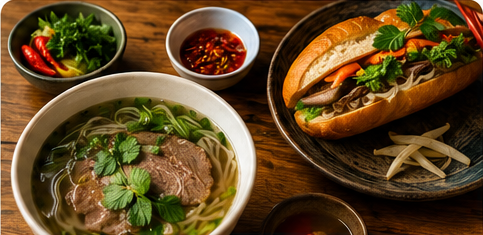
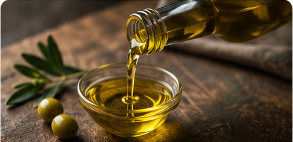

What Traveling Greece For 2 Weeks Taught Me About Life
Jun 21, 2021 · 11 min read
Hidden coves, ancient ruins, and meals that redefine what food means.
A blog about food, experiences, and recipes.
Jun 21, 2021 · 11 min read
Hidden coves, ancient ruins, and meals that redefine what food means.

Aug 1, 2021 · 7 min read
The math, the science, and the dark truth behind combo meal pricing.

Sep 14, 2021 · 9 min read
Twelve hours of simmering and a tare that will ruin all other broths for you.
Oct 3, 2021 · 6 min read
Down unmarked alleys — the izakayas that locals keep to themselves.

Oct 3, 2021 · 6 min read
Down unmarked alleys — the izakayas that locals keep to themselves.

Dec 5, 2021 · 5 min read
Blind taste tests, industry fraud, and what the label is actually telling you.